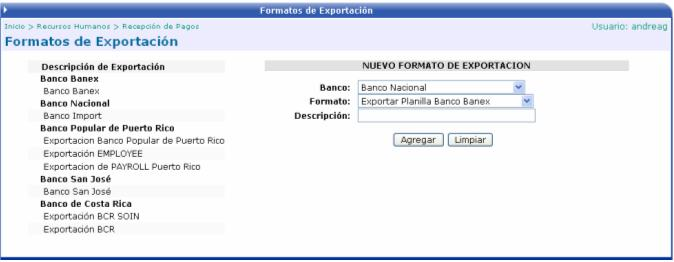

En esta opción se crean los formatos para los archivos de exportación a los Bancos.
El usuario debe de seleccionar el Banco, el formato de impresión y digitar el nombre de ese formato, para que una vez creado, se le despliegue en la lista de Exportaciones Disponibles de la opción Exportación de Archivos de Nómina.
